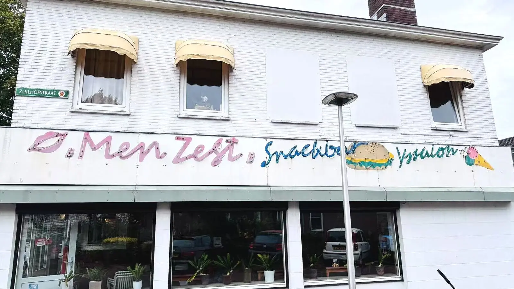

01 · KLASSIEKER
Goudgele frites
Knapperig van buiten, zacht van binnen. Met jouw favoriete saus.
AL JAREN EEN BEGRIP IN SASSENHEIM
Frites zoals ze horen te zijn, vertrouwde snacks en vriendelijke service. Bel vooruit, dan staat je bestelling voor je klaar.
GEWOON LEKKER
Van een klassieke frikandel tot een goedgevulde burger. Bij Men Zegt vind je een ruime keuze voor de kleine én grote trek.
Knapperig van buiten, zacht van binnen. Met jouw favoriete saus.
Een complete maaltijd, vers voor je klaargemaakt.
Bekende klassiekers en een ruime keuze aan vegetarische snacks.
GROTE BESTELLING? KOM MAAR DOOR.
Voor scholen, bedrijven, kerken, verenigingen en feestjes verzorgen we ook grotere bestellingen. Laat vooraf weten wat je nodig hebt, dan zorgen wij dat alles tegelijk klaarstaat.
WAT GASTEN ZEGGEN
★★★★★“Netjes, hygiënisch en snel geholpen. En vooral: lekkere patat.”
— Google-beoordeling
★★★★★“Goed eten, vriendelijke mensen en een gezellige sfeer.”
— Google-beoordeling
★★★★★“Goede kwaliteit, niet vet en fijne pistolets bij de snacks.”
— Google-beoordeling
TOT STRAKS
Openingstijden kunnen op feestdagen afwijken. Bel ons voor de actuele openingstijden.
